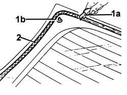

7035B25 tinted window of one load compartment rear door flap clean edges and smooth small abrasions
- Path
- Procedures > 70 FITTINGS > 7035 BODYSHELL WINDOWS > 7035B rear window > 7035B25 tinted window of one load compartment rear door flap clean edges and smooth small abrasions
- Kind
- repair procedure (removal / refitting; the operation number is the code)
- Applies to
- all engines; all production periods
- Interactive page
- https://sloeber94.github.io/elrnDB-fDbl/en/#/2585124
Applies to: all engines; all production periods
1. Using a suitable tool (1a), cut and smooth off the bead of sealant on the rearscreen (1b) in order to reduce the thickness to a minimum.
2. Carefully clean with compressed air the printed area around the edge of the window and thoroughly degrease with heptane.
If glueing takes place 60 minutes after cutting and smoothing the bead of sealant, treat the sealant surface with the specific activator and wait 15 minutes before fixing the rearscreen.
 | Type | Component | Name | Qty. |
|---|---|---|---|---|
- | PRIMER | TAIL-GATE GLASS SEALING STRIP | - | - |
